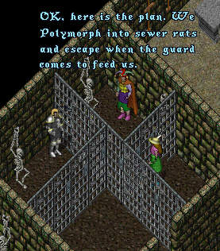
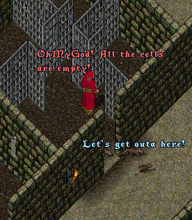
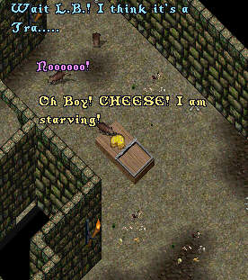
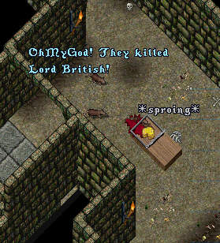
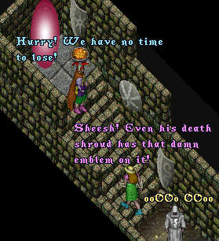

Episode 68: The Conspiracy (Part One). As you may remember from the last episode ImaNewbie and Irma have been captured and thrown into prison where they encounter noneother than the Famed Lord British, also a prisoner. Ima asks LB how he came to be imprisoned. Herein lies his story. (And do not despair, when you get to the end of the story you will find the latest 'toon...enjoy!)
Lord British's Story
Lord British begins to speak:
When I first came to these lands, Chaos ruled. It was a land filled with barbarians and thieves. My vision was to build a kingdom of peace and Order. As I could not possibly do this alone, I entrusted much of the day-to-day building of these lands of Britannia to a mystical and powerful guild called the OSI. I gave the responsibility of overseeing the OSI to my trusted friend and confidant, Lord Blackthorne. I concentrated on my vision of Britannia as a place of peace and harmony. A land filled with craftsman and tradespeople, living and working together to build a great society.
Blackthorne and the OSI however had different ideas and have been secretly plotting my overthrow ever since. Over time I grew lazy and vain. I began to envision a greater role for myself in the world. I set out on crusades to far away places like Antarctica. I began construction of a great castle in another world. I seldom showed my face in Britannia and the people began to hold me in contempt. Meanwhile Blackthorn and the OSI calmly set about to take over my kingdom and enslave the people.
You may have noticed that many of the citizens of Britannia just don't quite seem to be playing with a full deck. Many refer to them as NPC's (Non-Person Cyborgs). They wander around aimlessly, don't seem to understand when you speak with them, never change their clothes, don't seem to eat or bathe, etc. At first the OSI was satisfied with having these unfortunate beings run the shops and generally wander around the countryside. As time went on though the OSI began to notice how much easier they were to control than the regular citizenry. Real people tended to always be complaining about everything. We have all heard it. "Give us new skills, balance weapons, more houses, less houses, no houses, new lands to explore, mages too powerful, archers too powerful, control the killers and thieves," and so on and so on. So the OSI decided that the one way to end all the complaining once and for all was to brainwash the players using that machine you witnessed, effectively turning all the citizens of Britannia into loyal and non-complaining androids
Now, as to how the Red and Blue Robed individuals fit in to the picture; the GMs and Counsellors, or the "Robed Cult" as you know them, are not agents of the OSI. They are actually an ancient order of monks who have dedicated their lives to helping the peoples of Britannia. Blackthorne and his minions managed to harness the power of some mysterious crystals which gave them absolute power over the Robed Monks and forced them to do Blackthorne's evil bidding.
Ever since they captured me and threw me in prison I have been trying to figure out how to end the curse on Britannia and regain my throne. Then one night as I was lying here in prison, I had a vision as I slept. I saw the crystals glowing inside a stone tower hidden in a remote part of these lands. If we can get to the tower and destroy the crystals, then the spell Blackthorne has on the robed Monks will be broken. But it will not be easy. The hiding place is in the middle of a huge area devoid of hiding places. It is a great flat expanse of grassy plain and there is no way to approach it without being seen. In my vision it was guarded by the most ferocious of monsters and daemons.
Ahah! cries ImaNewbie, I spot one fatal flaw in their plan! I think I know a way to get to the tower undetected, but we will have to escape this place first!
- End -
We now return you to regular programming. As the episode opens we see ImaNewbie, Lord British, and Irma as they cleverly plot their escape.


Finding that their clever ruse works, the three rush for
the exit gate when all of a sudden, for some reason Lord
British is struck with an irrisistible desire for Cheese...


My apologies to "South Park" for that last frame, anyway,
the polymorph spell wears off just as they make it to the
way out of the hideout.

Will Ima, Irma, and LB escape? Will they manage to locate and destroy the crystals that are holding the GM's and Cousellors under Lord Blackthorne's evil spell? Will "ImaNewbie, the Movie" win Tryon the Oscar for Best Picture in next year's Academy Awards? 'Toon in next week for part two of "The Conspiracy".